Commission a sculpture
Give a personalized gift to someone unique.
I am more than happy to design highly personalized sculptures of family, friends and loved ones. I can sculpt whimsical characters with features and characteristics that you provide — a single character, a couple, or a group such as family members.
My sculptures can easily take into account profession, job or trade, hobbies, likes and passions. I enjoy incorporating these characteristics and making individualized sculptures!
Perfect for
- Birthday
- Mother’s & Father’s Day
- Retirement
- Anniversary
- Farewell party
- Valentine’s Day
- New baby
- Bar / Bat Mitzvah
- Engagement
- Wedding
- Graduation
How it works
- Tell me about them. Their hobbies, profession, favorite colors or outfits, inside jokes, meaningful moments. You’re welcome to send photos, too. Since the sculpture’s head is quite small, only the main facial features can be captured — but this is where your personal input can really bring the character to life.
- I sculpt. Please allow 3–4 weeks.
- It arrives. Delivered via UPS ground.
- $110–170for a single sculpture, depending on size & complexity
- $210–260for two figures
- 3–4 weeksfrom our first email-chat to a finished piece
- UPS groundcarefully packed and shipped to your door
Once the details of the commissioned piece are finalized, I send you a price quote for approval. Once approved, I begin creating the sculpture.
I also take special orders from art galleries.
Commissioned & special-occasion pieces

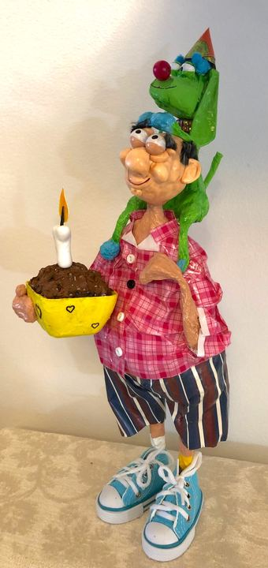

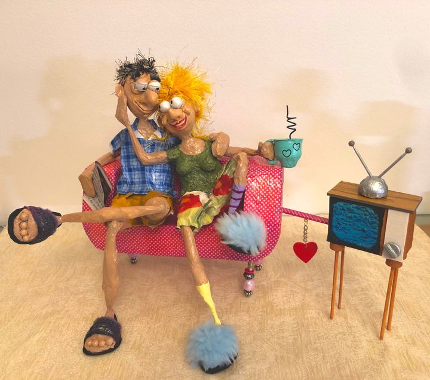
2 views
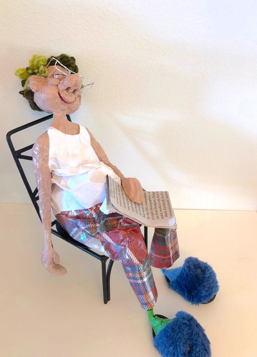

 2 views
2 views
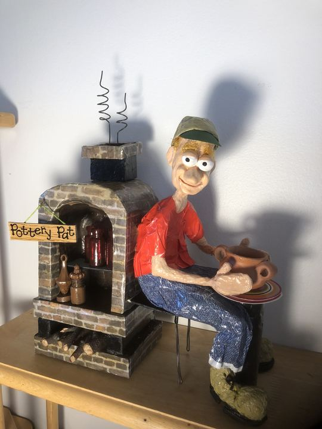

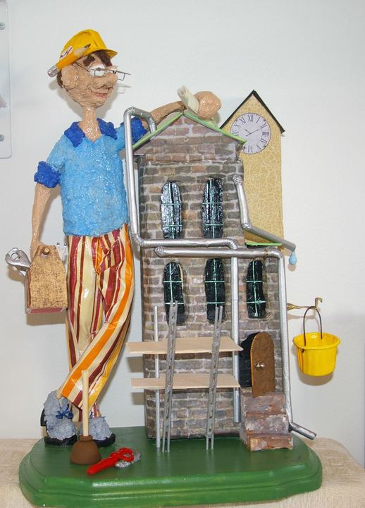

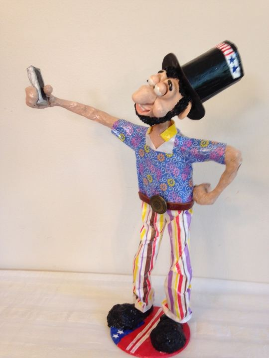

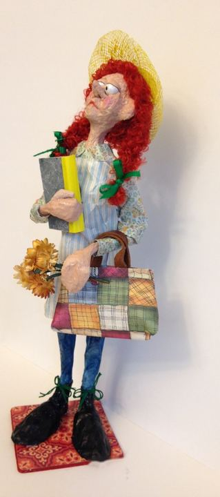

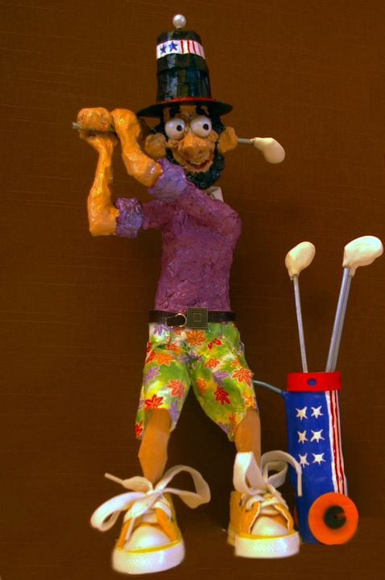


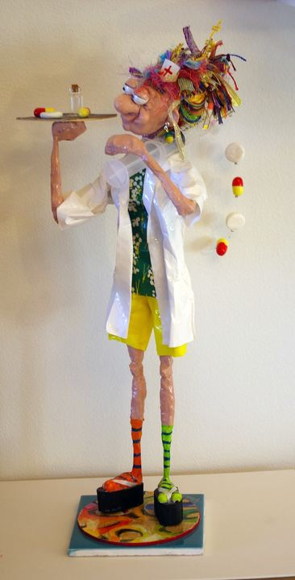


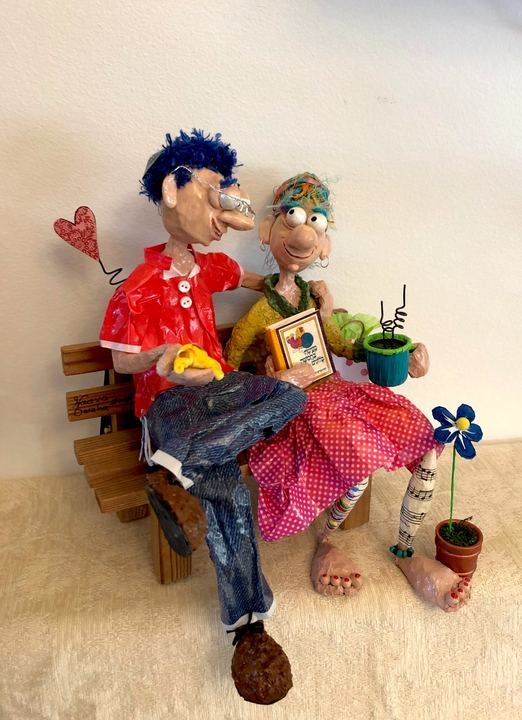


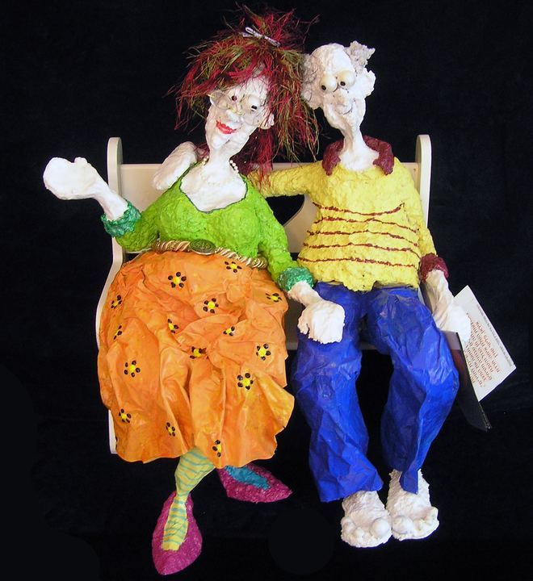

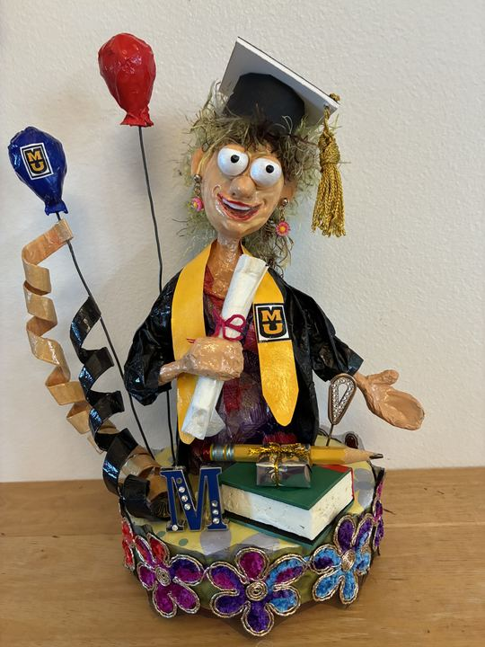
 3 views
3 views
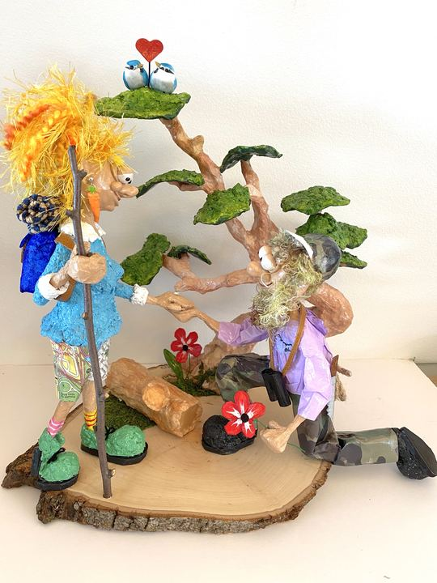